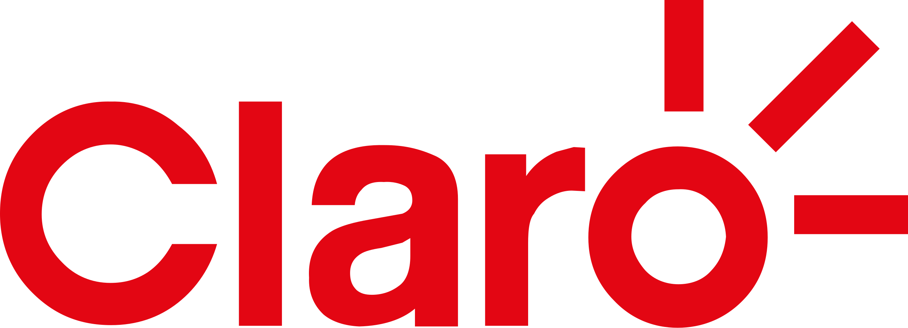

Claro – Portal de Reclamos
Contexto
Claro requería modernizar su Portal de Reclamos para cumplir con normativas de OSIPTEL, mejorar la trazabilidad de solicitudes y ofrecer a los usuarios una experiencia más rápida y transparente al registrar reclamos por servicios móviles, internet y telefonía.
El sistema existente presentaba procesos lentos, múltiples puntos de falla y un backend rígido que complicaba la integración con plataformas internas como CRM, facturación y gestión de casos.
Solución Implementada
Se desarrolló un backend modular orientado a servicios, capaz de integrar los registros de reclamos con los sistemas internos de la empresa mediante servicios SOAP y REST.
- Creación de APIs para registro, seguimiento y actualización de reclamos.
- Integración con plataformas internas de facturación y CRM.
- Lógica de validación basada en normativa OSIPTEL.
- Optimización de consultas y procesos en PL/SQL.
- Implementación de un módulo de auditoría y seguimiento.
- Despliegue en servidores WebLogic con alta disponibilidad.
Todo el desarrollo se realizó garantizando seguridad, cumplimiento regulatorio y capacidad para soportar altos volúmenes de solicitudes diarias.
Tecnologías Utilizadas
- Java 8 · JAX-WS · JAX-RS
- PL/SQL – Oracle Database
- WebLogic – despliegue empresarial
- SOAP / REST
- Arquitectura orientada a servicios (SOA)
- Validaciones OSIPTEL – flujos de reclamos
Resultados Clave
- Reducción de tiempos de registro de reclamos en más del 35%.
- Mayor estabilidad y resiliencia del sistema ante picos de carga.
- Mejor trazabilidad gracias al módulo de auditoría integrado.
- Cumplimiento 100% de las normas OSIPTEL para reclamos.
- Plataforma lista para futuras integraciones y servicios digitales.
Mockups del Proyecto
Capturas representativas del flujo de registro, validaciones y paneles de seguimiento.